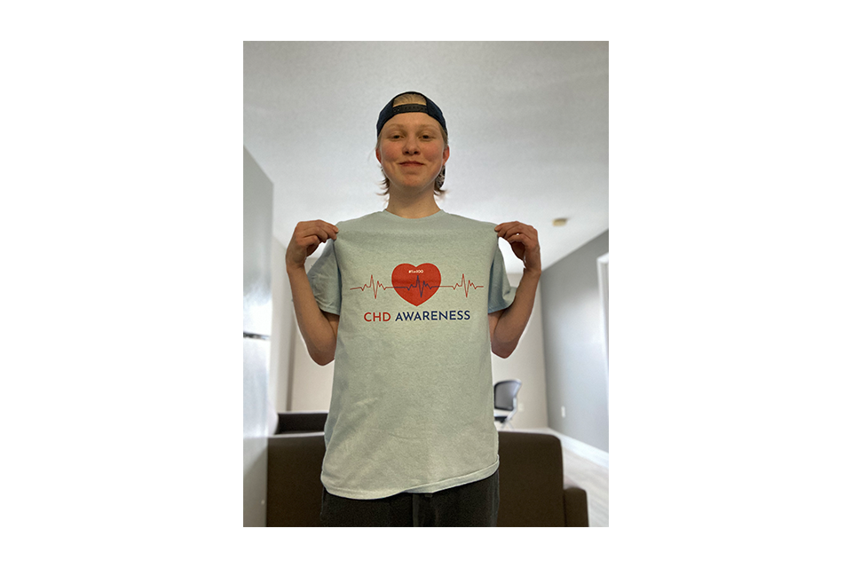
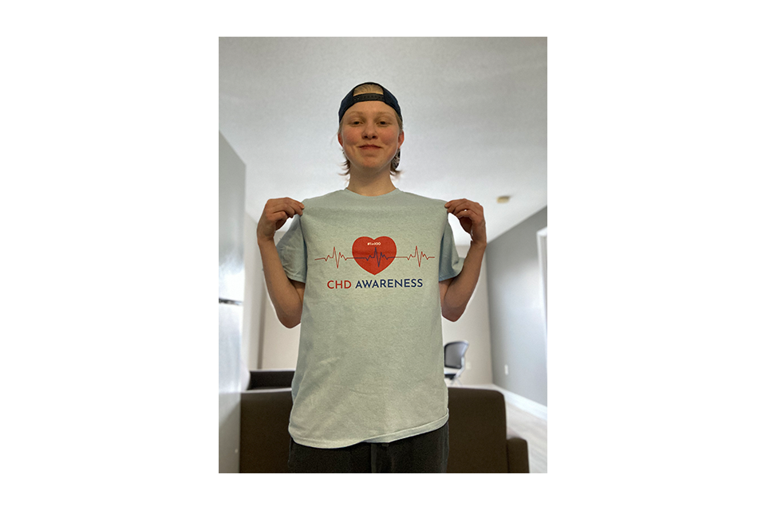

My First Portfolio Feature- CHD Awareness Campaign


 

A survivor myself, I'm trying my best to raise awareness for this unfortunate disease. This brand of my creation is designed specifically for those who have struggled, or anyone in their lives who have had multiple surgeries, transplants, hospital overnights, or the fear of losing a loved one.
The slideshow above includes several examples of my designs. For every sale I make, 100% of the proceeds are donated to The Hospital for Sick Children in Toronto, my childhood hospital. Help me spread the word about #1in100 CHD Awareness.
Much Love :)
My Second Portfolio Feature- Colour Slider w/HTML, CSS, and JavaScript
HTML
CSS
JavaScript
Final Result!
Cinema 4D/After Effects Projects
Living Room 3D modelled and texturized in Cinema 4D
Hotel Room 3D modelled and texturized in Cinema 4D
Commercial for Nickelodeon completed in After Effects
A Morphing commercial for kids to eat healthier, completed with Cinema 4D and After Effects.
Sportsnet Intro- Everything 3D Modelled from scratch, all custom textures and camera movements done in Cinema 4D. Editing completed in After Effects.
Cosmetics Commercial- Created in After Effects